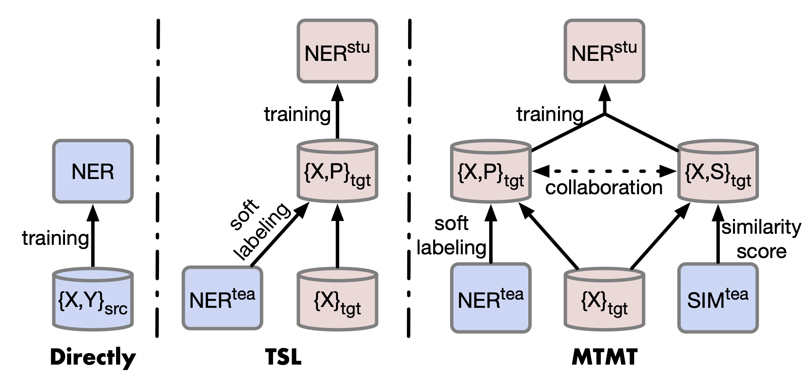
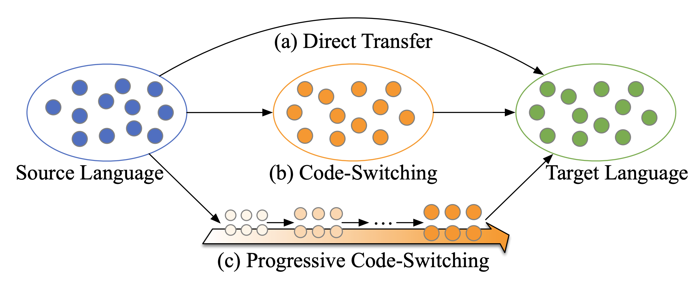
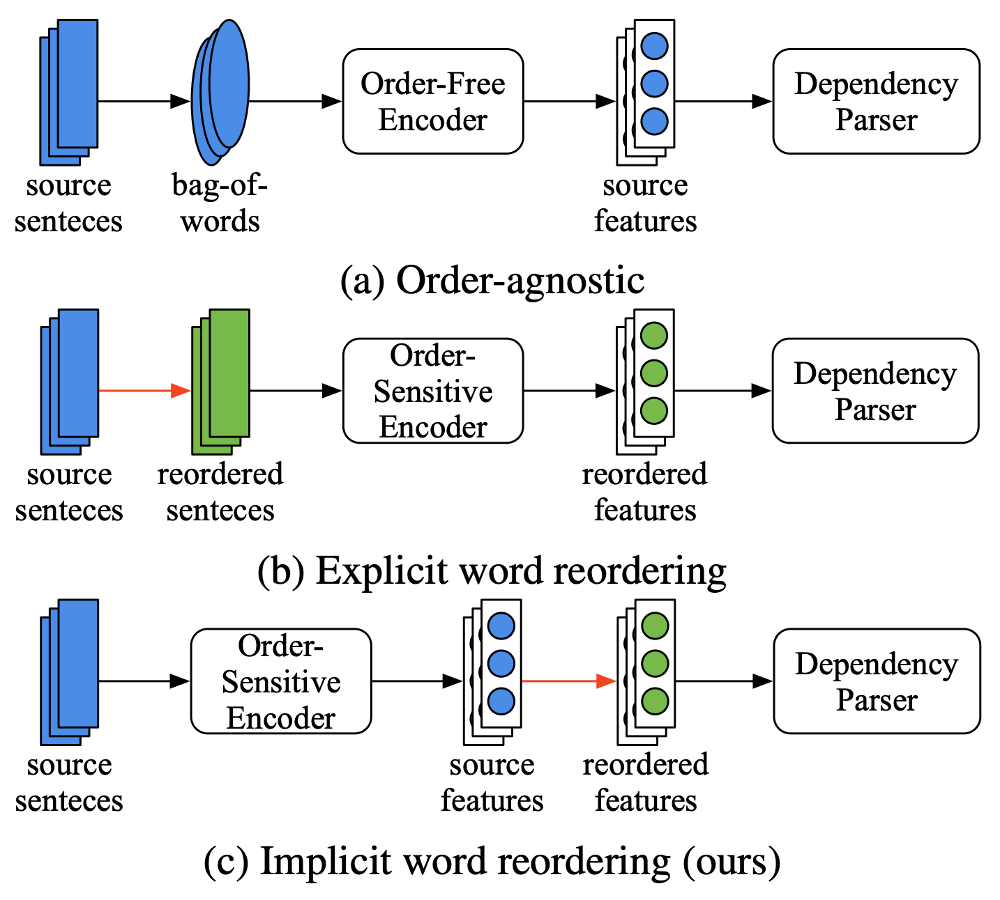

|
|
Zhuoran Li
I am doing research at the School of Artificial Intelligence, Beijing University of Posts and Telecommunications.
Email: lzr@bupt.edu.cn
Address: Xitucheng Road 10, Haidian District, Beijing
|
|
Research Interests
My primary research interests lie in the continuous improvement of Cross-Lingual Transfer. Currently, I am actively working on LLM multilingual techniques, including LLM reasoning, preference optimization and model self-improvement.
I'm open to collaboration and discussions. Please feel free to contact me and explore possibilities together.
|
|
Selected Publications
For the complete list of my papers, please see my Google Scholar.
|
|
|  |
An Unsupervised Multiple-Task and Multiple-Teacher Model for Cross-lingual Named Entity Recognition
Zhuoran Li, Chunming Hu, Xiaohui Guo, Junfan Chen, Wenyi Qin, Richong Zhang
ACL, 2022
|
|
|  |
Improving Zero-Shot Cross-Lingual Transfer via Progressive Code-Switching
Zhuoran Li, Chunming Hu, Junfan Chen, Zhijun Chen, Xiaohui Guo, Richong Zhang
IJCAI, 2024
|
|
|  |
Implicit Word Reordering with Knowledge Distillation for Cross-Lingual Dependency Parsing
Zhuoran Li, Chunming Hu, Junfan Chen, Zhijun Chen, Richong Zhang
AAAI, 2025
|
|
Academic Service
Reviewer for: ICLR, IJCAI, AAAI
|
|